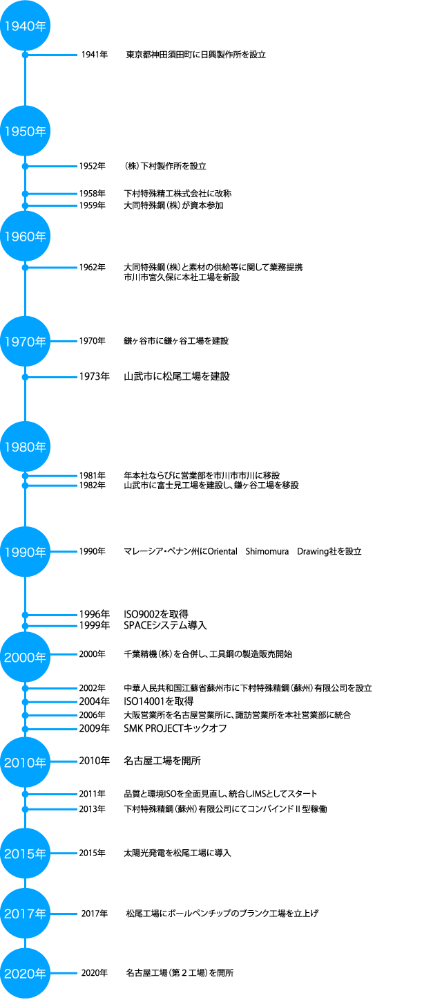

History沿革
1941年東京都神田須田町に日興製作所を設立
1952年（株）下村製作所を設立
1958年下村特殊精工株式会社に改称
1959年大同特殊鋼（株）が資本参加
1962年大同特殊鋼（株）と素材の供給等に関して業務提携
市川市宮久保に本社工場を新設
1970年鎌ヶ谷市に鎌ヶ谷工場を建設
1973年山武市に松尾工場を建設
1981年本社ならびに営業部を市川市市川に移設
1982年山武市に富士見工場を建設し、鎌ヶ谷工場を移設
1990年マレーシア・ペナン州にOriental Shimomura Drawing社を設立
1996年ISO9002を取得
1999年SPACEシステム導入
2000年千葉精機（株）を合併し、工具鋼の製造販売開始
2002年中華人民共和国江蘇省蘇州市に下村特殊精鋼（蘇州）有限公司を設立
2004年ISO14001を取得
2006年大阪営業所を名古屋営業所に、諏訪営業所を本社営業部に統合
2009年SMK PROJECTキックオフ
2010年名古屋工場を開所
2011年品質と環境ISOを全面見直し、統合しIMSとしてスタート
2013年下村特殊精鋼（蘇州）有限公司にてコンバインドⅡ型稼働
2015年太陽光発電を松尾工場に導入
下村特殊精鋼(蘇州)有限公司にてTS16949認証を取得
2017年松尾工場にボールペンチップのブランク工場を立上げ
2019年タイ王国・チョンブリ県にDaido Shimomura Steel Manufacturing 社を設立
2020年名古屋工場（第２工場）を開所
